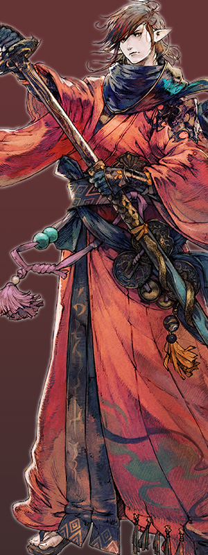
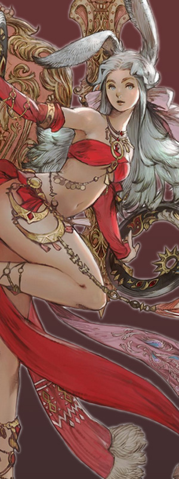

JOBS
Welcome, adventurer with unlimited growth potential.
In the Final Fantasy 14, you can foster all the jobs you want with one character and change your
job right away by equipped with a job-only weaponry.
Enjoy Final Fantasy 14 right now without worrying about your job
BATTLE JOB
-
Paladin
Protector of the Iron Wall, armed with armor and holding swords and shields to protecting our troops. Knight is a defensive role that enables efficient defense using shields. We attack the enemy mainly with one hand sword and shield, and no-fiction magic attack. It can prevent enemy attacks with shields, boasting strong defense and having a number of specialized skills to protect our troops, so you can stably protect your party in various situations. - Warrior A lion on the battlefield who wields a huge axe to confront the enemy. A defensive role that consumes accumulated primitives and attacks the enemy with powerful damage. The company's unique capabilities enable powerful attack techniques to free up the raw materials and maximize damage to overwhelm opponents. While the skills to protect our troops are less than those of other defense professions, powerful damage can attract and overwhelm our enemies.
- Dark Knight Knight of the Darkness training the Supreme Prosecutors to tame the inner darkness. It is a defensive role that flexibly operates physical and magical attack techniques using the Supreme Prosecutors' Office. You can use a variety of techniques to protect yourself or your allies, including defense specialized in magic attacks. Its characteristic is that it can operate MP consumption technology and MP recovery technology alternately to continuously attack and defend.
-
 Gun Breake
Heirs to the Army Heald Sword, which was used by the ancient Queen SS.
It is a defensive role that uses a weapon gun blade that combines the form of a gun with a dosin.
It can create protective film with combo effect, enabling efficient defense.
Consuming the accumulated consumption of unique technology and combo enables you to use powerful additional attack techniques.
Gun Breake
Heirs to the Army Heald Sword, which was used by the ancient Queen SS.
It is a defensive role that uses a weapon gun blade that combines the form of a gun with a dosin.
It can create protective film with combo effect, enabling efficient defense.
Consuming the accumulated consumption of unique technology and combo enables you to use powerful additional attack techniques.
- White Mage Heirs to ancient white magic using powerful healing magic. It is a role of recovering quickly from the enemy's attack. As an orthodox healer, I have intuitive recovery and attack skills, which I recommend as my first job in the recovery role. In the event of an unexpected situation during combat, strong healing can respond quickly, and in emergency situations, we can protect our troops from danger through technology that can restore all of our strength.
- Scholar A strategist who effectively protects allies from enemies by summoning fairies. It is a recovery role to summon a fairy with healing power and support our troops together. It uses techniques specialized in protecting our soldiers' lives from enemy attacks by creating protective shields and shields along with direct healing. You need to quickly understand the flow of combat and create a shield before enemy attacks come, and use the technology of the fairy to suit your situation, which requires quick judgment and operation of appropriate techniques.
- Astrologian A man who turns a celestial sphere around to carve out his destiny with an arcana hinting at a constellations. It is a special recovery role that uses star power and cards called 'Arcana' to increase the power of recovery magic or create a protective barrier depending on the situation. By giving our troops the advantageous arcana, you can lead the battle in an advantageous direction by providing buffs to improve their attack power.
- Monk Master of martial arts, handling the inner chakra to drive the enemy. It is a melee attack role that enables quick fighting and accumulated buffs to attack such as lightning. It requires considerable concentration because the technology that can be used in combat situations varies depending on the situation of war or Poomsae.
-
 Dragoon
A man who hunts dragons by jumping up into the sky with his spear in his hand.
It is a close-range attack that penetrates and attacks the enemy with strong force. With windows, you can use a variety of jumping techniques to attack and move, accumulating dragon power to attack enemies with more powerful damage.
Completing the combo allows you to use stronger attack techniques and give your allies attack buffs.
Dragoon
A man who hunts dragons by jumping up into the sky with his spear in his hand.
It is a close-range attack that penetrates and attacks the enemy with strong force. With windows, you can use a variety of jumping techniques to attack and move, accumulating dragon power to attack enemies with more powerful damage.
Completing the combo allows you to use stronger attack techniques and give your allies attack buffs.
- Ninja A person who uses mystical power figures inherited from the East. It is a close-range attack role that uses technology with various personnel depending on the flow of the battle. Depending on the order of stamping, the kind of artificial art is different, allowing strong attacks or buffs. You need quick judgment because you have to make a seal depending on the battle situation.
-  Samurai A swordsman who has mastered Eastern swordsmanship independently developed by turbulence. It is a close-range attack that damages the enemy with powerful damage by stacking islands and swords. Depending on how you utilize accumulated islands and black flags, you can attack differently. Combat by giving buffs to increase attack power and speed. Its strong characteristic is that it can push the enemy mercilessly with enhanced attack power and attack speed.
- Bard An ancient archer who supports our troops by singing colorful poems and songs. The role of a long-range physical attack that attacks the enemy with arrows of poison and wind properties. An enemy hit by an arrow is given a debuff that causes dot damage. Maintaining the debug is important because it can cause more damage if the debug is in a retained state. It is a supporter type that can damage enemies by singing poetry and songs, or give additional buffs such as attacks and protection to allies.
- Machinist The construction of a saint capable of a variety of attacks with weapons made with unique technology. The role of a long-range physical attack that uses guns and weapons to attack the enemy. Use the extra-effected bullet to detonate damage to the enemy as many times as you use it at once, so use the technology quickly in a short time. By accumulating heat through combo, technologies can be upgraded and more powerful.
-  Dancer Master of combat dance who destroys enemies with brilliant, sharp dance moves. The role of a long-range physical attack with a throwing weapon. Attack enemies using additional attack techniques based on the accumulated number of annularities through unique technologies. Successful disruption in sequence can result in increased damage buffs while powerful wide-area attack technology can attack enemies.
- Black Mage Destroyed madosa attacking enemies with powerful dark magic created in ancient times. Black Madosa is a long-range magical attack role that uses attack magic of various attributes. Use flame properties that can use powerful magic, chill properties that fill mps, and lightning properties that can cause lasting damage.
- Summoner A man who is free to summon a ministry horse containing the attributes of a savage god. The role of a long-range magic attack that invokes summoners who have served according to the combat situation and accumulated depth of possessedness and attacks the enemy. Summoners can fight together in battle form and circumstances, and they attack the enemy with their own powerful techniques using magic according to their properties.
- Red Mage Red Madosa, who operates the Black and White Manas in a balanced manner to mount a powerful magic attack. A magic attack that enables two consecutive spells of magic in a single spell and a near-field attack using a magic attack. We can also quickly support the recovery and revival of our troops in critical situations by utilizing continuous magic, which is the unique technology of the Red Horse Master. Although the attack power is low in the role of magic attack, it is not difficult to operate mana for technology use and is flexible, so you can enjoy a speedy battle.
LIFE JOB
- Miner A collector who uses pickaxes and hammers to mine minerals and rocks. It is a Japanese word that collects various kinds of materials such as stone, rock, jewelry, etc. by mining minerals and rocks. Collected items can be used as materials for making weapons, armor, accessories, etc.
- Botanist A collector who cuts down trees and grass using a hand axe and a scythe. It is a job to collect various kinds of wood, seeds, and fruits by cutting down trees and grass. Collected items can be used as materials for producing weapons, armor, and cooking items.
- Fisher A collector of fish, shellfish, crustaceans, etc. using a fishing rod and harpoon. It is a job to collect various kinds of fish, crustaceans, etc. in the sea and river. Collected items can be used as ingredients for various dishes or other items. Depending on the fishing place and the bait you use, the fishing species vary, and unlike other collecting jobs, you can challenge catching rare fish to catch.
- Carpenter Manufacturer of wood weapons and tools It is a manufacturing job that processes wood using saws and jangdori, and makes weapons and various tools of wood materials such as cane, window, and bow.
- Blacksmith Manufacturer of metal weapons and tools It is a manufacturing job that uses forged hammers and wire plates to process ore and make weapons and various tools made of metal materials such as axes, hand swords, and hora.
- Armorer Manufacturer of metal armor and other tools It is a manufacturing job that uses sheet metal hammer and pliers to process ore and make metal armor such as sheet metal, chain armor, shield, etc. and various tools.
- Goldsmith Manufacturer of jewelry and jewelry. It is a manufacturing job that uses a work hammer and grinding machine to process gemstones and make accessories and various tools.
- Leatherworker Manufacturer of leather armor and tools It is a manufacturing job that uses leather knives and wooden towels to tan leather and make leather armor and various tools.
- Weaver Manufacturer of fabric armor It is a manufacturing job that creates threads and fabrics using needles and spinning wheels to make armor made of fabric and various kinds of prosthetic flesh.
- Alchemist Producers of pension goods and drugs. It is a manufacturing job that makes various materials made from various collection materials such as annuity materials and various medicines.
- Culinarian a producer of various dishes It is a cooking job that uses frying pans and cooking knives to prepare various ingredients, and to make food with additional effects that help combat, collect, and produce.